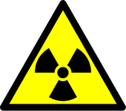
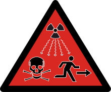

La radioactivité est un phénomène découvert en 1896 par Henri Becquerel sur l’uranium et très vite confirmé par Marie Curie pour le radium. Il s’agit d’un phénomène physique naturel au cours duquel des noyaux atomiques instables, dits radioisotopes, se transforment spontanément et dégagent de l’énergie sous forme de rayonnements divers, pour devenir des noyaux atomiques plus stables.
| Risque d’irradiation. | Risque de danger de mort ou de dommages sérieux. |
|---|---|
|  |  |
Pour mesurer la radioactivité, on distingue deux types de grandeurs : les grandeurs objectives et les grandeurs subjectives.
Ces grandeurs sont mesurables à l’aide d’appareils de physique :
Ce sont des grandeurs non mesurables directement, elles sont estimées à partir de coefficients de pondération définis par la CIPR.
| Émetteur | Activité | |
|---|---|---|
| Corps Humain | 8000 Bq | |
| Élément | Isotope | Activité |
| Potassium (K) | 40K | 263 Bq/g |
| Uranium (U) | 235U | 80 Bq/g |
| 234U | 230 mBq/g |
Source : Wikipedia